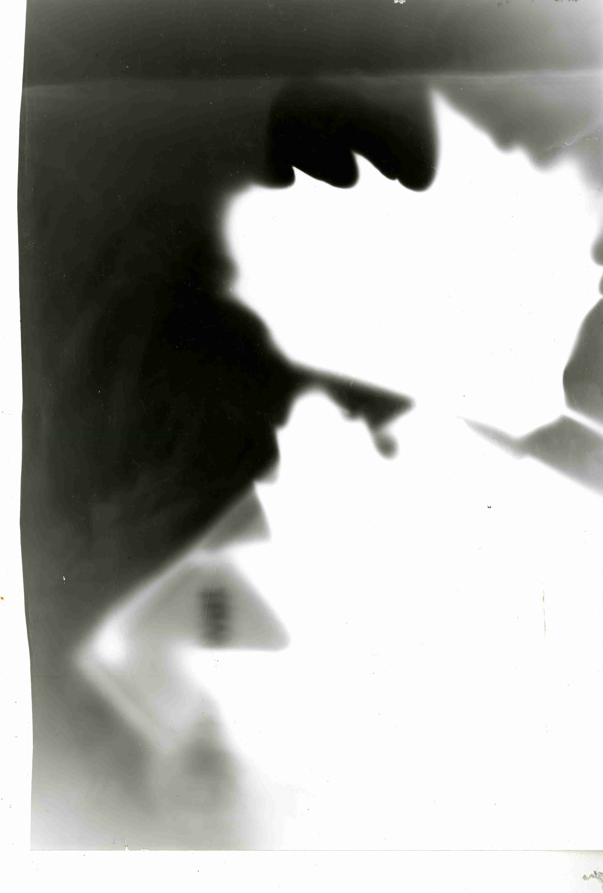
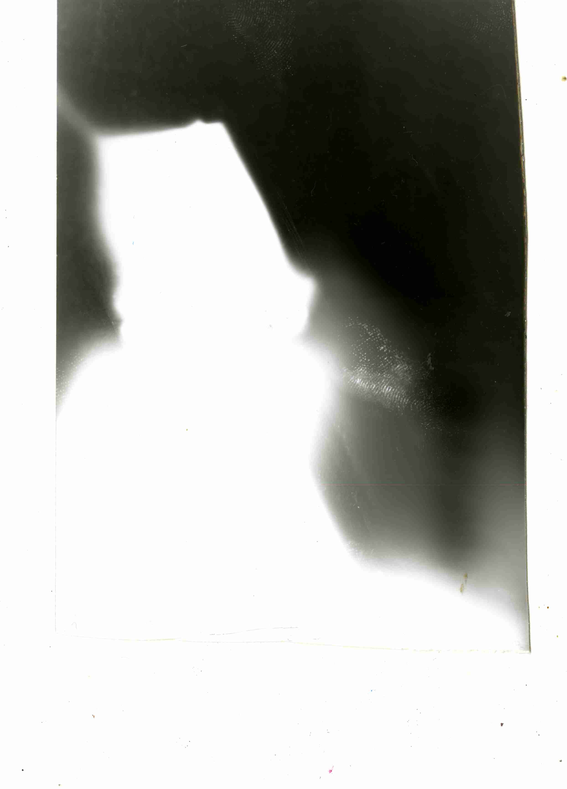
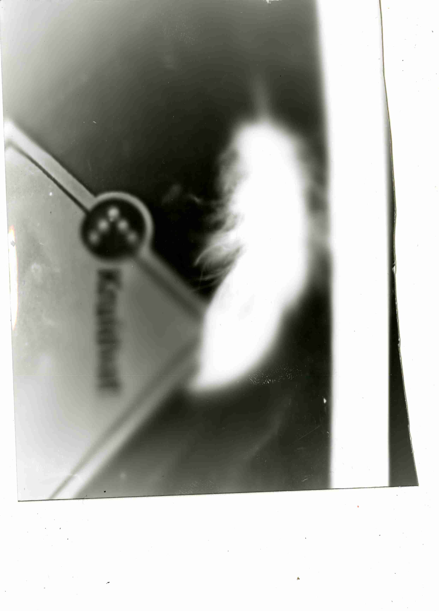
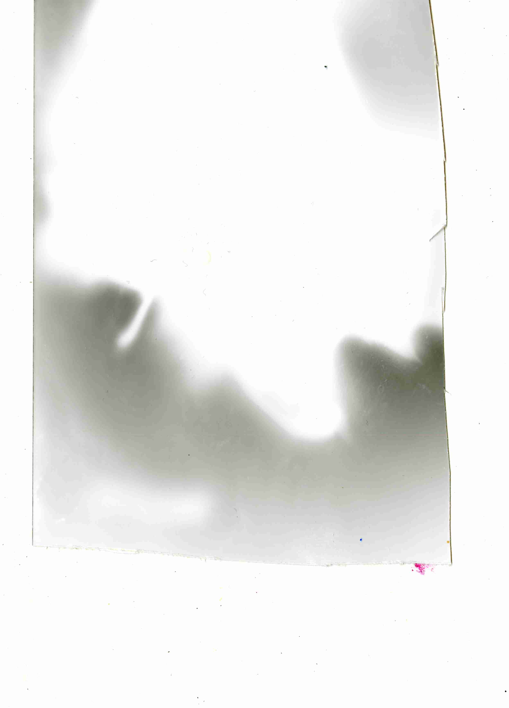

road_kill is about roadkill. Every other day I look at the smashed bodies of small feathered or hairy animals and wonder what happened to them, where were they born, where are they now. I created a sort of tribute to them all, by working alongside the animal rescue service and documenting this process of picking up/getting rid of the animals. I took photos, I collected parts of hair and feathers in ziplockbags and made photographic prints of them. I wrote alongside this process. I questioned about the nature of this animal rescue service, its partly built on care and partly built on the practicalities of getting rid of what’s in the way of a functioning world. I learned that all roadkill eventually, if it’s no one’s pet, gets thrown into a big fire to become fuel. Even the name, roadkill, is so reductive. It doesn’t mention the animal. From the photos I took, I made a slideshow, that was projected onto a self-built shrine, along with the darkroomprints. Syd Yap made a soundscape for it, which I performed with live at Radio Worm (2024, 25 Hour Relay) reading the text out loud with it.
road_kill
2024